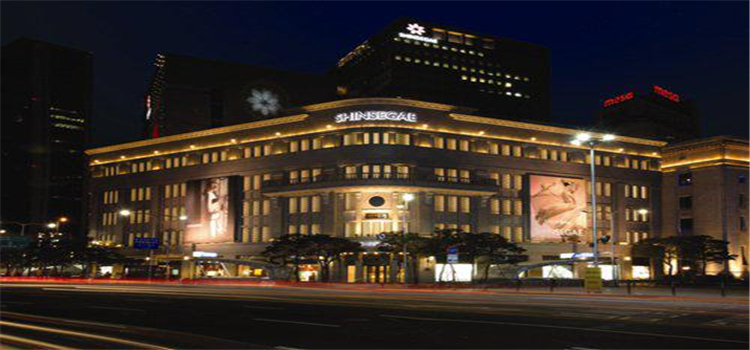
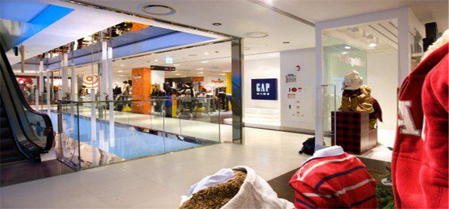

大型购物商场和百货公司
#新世界百货店#
1930年代韩国第一间百货公司开设在原日本三越百货公司京城分店位置，也就是现在的新世界百货公司总店。 身为韩国最早的百货公司，新世界百货公司总店以悠久的历史及传统为基础，提供顾客最高的品质及最优质的服务。
2007年全新装潢完工的名品馆，集合世界三大品牌及多个新锐设计师作品品牌，以多样化新世代为概念而成的综合百货公司。 另外设有室外花园和艺廊展厅，让文化与时尚相互协调成为崭新的生活休闲空间。
地址：首尔中区小公路63

图：新世界百货店
#现代百货店#
现代百货店所在的狎鸥亭是公认的富人区，有很多高级商店。离这里不远的清潭洞有一条Rodeo大街，街道两旁是30多家只销售外国最高级产品的百货店和国外名牌专卖店。在这里出现的服装和发型、饰物，往往1~2月内便流行全国。狎鸥亭现代百货店自1985年开业以来，顾客一直络绎不绝，是领导高级购物文化潮流的地方。
地址：首尔江南区狎鸥亭洞429

图：现代百货店
#Galleria百货店#
Galleria百货店是一家有名的高级精品商店，拥有很高的知名度。它位于首尔市著名的富人区之一狎鸥亭洞，其商品以国际名牌和高级商品为主。Galleria百货店的时尚馆可以说是领导韩国流行时尚的中心，它总是率先一步引入国内外最新的时尚及季节性商品。
Galleria百货店附近是充满高科技和综合气息、年轻和流行的街市，深受人们的喜爱，这里从很早以前就是上流社会年轻人经常光顾的地方，是一条时尚街道，它有许多咖啡屋和饮食店，现在去的话，可以看到许多引领时尚的年轻人。
地址：首尔狎鸥亭路343号（狎鸥亭洞）

图：Galleria百货店
商铺市集和主题购物街
#明洞#
韩国明洞（명동）一直是游客首尔游的第一站，是韩国著名的购物街也是韩国最繁华的地段，日流动人数最高可达100万人以上。位于首尔中心的明洞是政治、经济、文化的中心，也是铭刻韩国近代史的象征性街区。购物天堂明洞，同时也是外国游客旅行韩国购物的象征。明洞的繁华和商业性兼旅游性的成功，为韩国其他地区购物街文化的发展做出了典范。
图：明洞街头
地址：指从地铁4号线明洞站到乙支路、乐天百货店之间约1公里长的街道
到达交通：乘坐首尔地铁2号线，在乙支路入口站下车，从5号出口出来，需要10分钟左右，或者乘坐地铁4号线，在明洞站下车，从5，6，7，8号出口出来，需要5分钟
营业时间：11：00-24：00（根据各店家情况有不同）
#东大门 동대문의류시장#
位于首尔中心街区之一的钟路5街和6街之间的东大门市场，被称为“韩国东大门综合服装市场”或“韩国东大门服装城”。这里经营布料、服装材料、新婚用品、饰品等与时尚有关的所有商品，是一处专门性、综合性的服装批发零售市场。
图：东大门
韩国东大门市场被称为时尚诞生地，第一时间向大众展示最新潮的服饰、最流行的面料，是韩国内最多服装商人聚集的地方。这里是关心时尚及梦想成为服装设计师的追梦族们的必经之地，也是喜好低价轻松购物的大众消费者们的理想之所。不仅国内，国外从事时尚业的游客们访韩时，东大门市场也成了必不可少的旅游名胜。
图：东大门内景
地址：首尔中区乙支路6街一带
到达交通：地铁4号线东大门站；地铁2号线东大门历史文化公园站
官方网站： http://www.dongdaemun.com/
#狎鸥亭•清潭洞（압구정・청담동）#
如同巴黎的香榭丽舍和意大利的米兰、韩国的狎鸥亭和清潭洞可谓引领尖时尚的中心街区。首尔以汉江为界，分为江南和江北地区。
其中心地区（汝矣岛、钟路、市政府等）为政治和行政的枢纽，而位于首尔东南部的江南地区则是尖端产业、创业投资企业、国际贸易活动的活跃地带。这里聚集了最高价位的公寓区和高级花园住宅villa，堪称韩国的第一富人区。
图：狎鸥亭•清潭洞
狎鸥亭和清潭洞是江南上流层们代表性的购物街区，这里时尚前卫、经典极致的地方处处可见。关注美容时尚，挚爱文化和艺术的中产层以上的年轻人们引导着最新的潮流和社会趋势，可谓首尔的热门街区（hot place）之一。
图：狎鸥亭•清潭洞
被称为“时尚麦加”、“名品时尚第一街”的狎鸥亭路（连接狎鸥亭和清潭洞的时尚街）上汇集了最高级的百货商店和世界名品店，国内外有名设计师们的专营店、画廊及每条胡同内的综合时尚店、一站式休闲购物（One-stop slow shopping）等复合型购物空间。
狎鸥亭路是时尚产业从业者和前卫明星们常到的流行特区，每年这里还会举行与时尚相关的各式庆典等多种活动。
地址：首尔江南区
到达交通：地铁盆唐线狎鸥亭罗德奥站；地铁3号线狎鸥亭站
图：狎鸥亭•清潭洞店铺
#新沙洞林荫路（가로수길）#
首尔的林荫路很多，其中新沙洞林荫路（가로수길）备受瞩目，不仅仅是因为茂盛葱郁的树木，更重要的是这里拥有独特的文化倾向和艺术感受。
图：新沙洞林荫路
汇集了各式办公大楼的繁华街区江南（首尔的东南部地区），最具代表性的文化区便是新沙洞，而从地铁新沙站附近到狎鸥亭方向不到1公里的距离，遍布着银杏树的街道便是新沙洞的林荫路。春秋季节，黄色的银杏叶子带给人们无限的情趣和韵味，而路两旁精致华丽的店铺和充满特色的街道氛围，更是吸引着国内外游客的到来。
图：新沙洞林荫路街道
地址：首尔江南区新沙洞
到达交通：从地铁3号线新沙站8号出口步行15分即到；6009路机场巴士在地铁3号线新沙站6号出口处（Riverside酒店对过）停车。（开往仁川国际机场）
#新村∙梨大（신촌・이대）#
这里是韩国延世大学、梨花女大、弘益大学、西江大学聚集的大学街区。作为韩国大学街代表的新村，布满了氛围讲究的餐馆、酒吧、网吧、卡拉OK、漫画房等娱乐文化空间。
图：新村∙梨大标志地
而梨大则有许多女生们喜欢的服饰店、美发美容店等。因为是大学街区，所以附近的寄宿房、考试院、一居室等适合学生居住的住房设施很齐全，各类语言进修班也很多。梨大的标志就是那只红色的高跟鞋，去了的番友一定不要忘记和它合影。
图：新村∙梨大
地址：首尔新村
到达交通：地铁2号线新村站；地铁2号线梨大站
本地品牌
#MIXXMIX#
韩国混搭时尚品牌mixxmix通过简单的搭配，色彩的重叠营造出了不同风格的造型。如同他的英文名字一样，混合各种可能性的色彩和样式，搭配出自己最适合的服装和态度
相关链接：http://mixxmix.com/
图：MIXXMIX官网
#THURSDAY ISLAND#
THURSDAY ISLAND的标志就是它的碎花图案，根据不同的剪裁设计，打造出了自然的都市复古风格.
相关链接：http://www.thursdayisland.com/
图：THURSDAY ISLAND模特照片
#LUCKY CHOUETTE#
Lucky chouette针对年轻人所创建的Jardin de Chouette的副线品牌，以青春活力为卖点。品牌利用法式街头涂鸦、夸张鲜艳配色、个性化剪裁，营造出年轻人心中都想要的表现自我的心情，其中又以涂鸦的猫头鹰最受关注!!
图：UCKY CHOUETTE 服装
特色礼品
#红参 #
韩国高丽参以极高的药用价值闻名遐迩，而红参正是以高丽参为原料，经过一系列加工而制成的熟用品。
推荐：正官庄红参。正官庄是众多红参品牌当中最有质量保证的。可挑选的产品种类也五花八门，例如胶囊、切片、参茶颗粒、整参等，价格也是千差万别。可以根据自己想购买的预算来挑选，适合送给长辈和平时注重养生的朋友。买正官庄最好在免税店，市内的专卖店并没有任何价格优势。
图：红参
#泡菜#
泡菜是韩国家庭中代代相传的餐桌必备小菜，也是外国游客心目中最具代表性的韩国食品。国人喜欢把韩国叫做泡菜国。泡菜是最能代表韩国的伴手礼，各超市就能买到。
图：泡菜
#蜂蜜黄油薯片#
韩国海太食品公司推出的“蜂蜜黄油薯片”以其独特的口味红透韩国，引发韩国消费者争相购买。一般711便利店就可以买到。如果你的朋友是个吃货，可以买个他，或者家里有小孩的，也可以买给小盆友。
图：蜂蜜黄油薯片
#海苔#
紫菜添加油、盐和其他调料经过烘烤等加工，就摇身变成了美味的“海苔”。海苔不仅味道鲜美，营养价值高，还是低热量的健康食品。长期食用海苔可以延缓衰老，增强机体免疫力，可谓是老少咸宜的最佳伴手礼。韩国的海苔制品非常丰富多样，除了一般的原味海苔，还有炭烧味、绿茶味、泡菜味等多种创新口味的海苔，更有海苔巧克力、海苔煎饼等美味零食。
图：海苔
#韩茶#
韩国的茶不同于中国的茶叶，多是粉末状或膏状。粉末状的韩茶内通常含有用松子仁、核桃仁、薏苡仁等研磨的粉末，冲饮的口感类似于中国的油茶，味道香甜浓郁。膏状的茶一般有蜂蜜柚子茶，酸酸甜甜，美味又美容。
蜂蜜大枣茶，浓浓的枣香配上蜂蜜的甘甜，不仅味道好还是女性养颜补血的佳品；生姜茶，生姜的微辣中还带有一丝丝清甜，既能预防感冒又可以驱寒滋补。另外，还有用柿子叶、艾草、五味子等制成的特色韩茶，味道各有千秋。韩茶不仅口感好，且是健康品，伴手礼中又怎能少了它的身影！
图：韩茶
#传统面具#
是否记得《王的男人》里面李准基的那段精彩的面具舞？跳舞时他所戴的正是韩国的传统面具。这种传统工艺品来源于韩国民间的面具舞，反映出韩国人民对于生活的
热爱和乐观的态度。传统面具是木制的，雕刻出神态各异的面部表情以及多种人物角色，做工精细、传神，面部特征极具韩国特色。面具尺寸有大有小，既有小巧的面具钥匙链，也有可以挂在墙上的大型装饰型面具。用它作为伴手礼送给亲戚朋友绝对够个性！
图：传统面具
#韩服娃娃#
色泽艳丽，裁剪考究、色泽鲜艳的韩服是否曾经打动过你的芳心？但是买一件的话钱包又会大出血，非常心疼？那么就让韩服娃娃来实现你的愿望吧！
衣着色彩艳丽韩服的娃娃是韩国传统服饰文化的缩影，同时也反映出韩国现实生活的风土民情。韩服娃娃形态各异，有身着结婚礼服的夫妻娃娃，还有身着华丽韩服的皇族娃娃，甚至还有身着韩服的泰迪熊娃娃、Hello Kitty娃娃等等。最近还推出了迷你版的韩服娃娃，憨态可掬，十足可爱。
韩服娃娃的制作材料多种多样，除了常见的布艺娃娃，还有用韩国特有的韩纸制成的纸艺韩服娃娃，做工也非常精细。这款伴手礼相当具有收藏价值，绝对不要忘记收入囊中！
图：韩服娃娃
必买化妆品牌
#雪花秀 Sulwhasoo#
雪花秀品牌，虽仅诞生于1997年，却根植于一系列代表性韩方化妆品。73年以人参为基础开发的“真生参美”，75年的“参美”，还有以强调韩方成份效果，协同而开发的87年“雪花”。
根据更高“韩方理论”选定之功效广受科学肯定的97年“雪花秀”以及2004年亮丽登场的“新雪花秀”，传承着（株）太平洋韩方化妆品的正统传统。
图：雪花秀产品
#赫拉 Hera#
在韩国的一线品牌，品牌包括了几乎所有需要的护肤品，和全线的彩妆系列。赫拉的彩妆是太平洋旗下的顶级彩妆。赫拉面向都市中的白领女性，以及对生活品味具有较高要求的女性。
图：Hera产品
#兰芝#
充分活力的洁净而成熟之美年轻、充满活力、展现自我美丽的自信感；在水透明肌肤上，打造时尚妆容，时刻散发美丽光彩。定制水，水科学，打造兰芝雪白韵意。
图：兰芝
#婵真#
婵真2007年获得英国kifus化妆品有限公司技术配方支持，主要代表性产品有：婵真银杏泡沫洗面奶、婵真红酒调理霜、婵真美菁CRD平衡调理霜、婵真新调理霜、婵真银杏天然爽肤水、婵真银杏天然乳液、婵真银杏深层清洁卸妆水、婵真银杏天然精华液、婵真银杏天然营养霜等。
图：婵真
#VOV#
韩国本土最受欢迎的彩妆品牌，由韩国著名化妆品生产公司CAMMON（夏梦）生产。位列韩国三大知名化妆品品牌，已成为韩国本土乃至亚洲最受欢迎的美容护肤及彩妆品牌之一，其优秀的品质征服了无数的消费者。
图：VOV
退税
#退税标志是什么？#
退税商店和退税单上均标有可获得退税的公司。请注意，只能在相应的退税公司退税，建议提前加以确认。
相关退税公司官网：
Global Blue： http://www.globalblue.cn/
GLOBAL TAXFREE：http://web.gtfetrs.com/cn/index.page
Easy Tax Refund：https://www.easytaxrefund.co.kr/CHN/
#退税的标准是什么？#
在韩国，必须在有「TAX FREE SHOP」标志的商店里，购买3万韩元（约169人民币）以上的商品，才可以免除附加税。
1）当你买50000韩元（约283人民币）时，可退到7%的税，这是最划算的；
2）接近50000韩元（约283人民币）时，请记得要努力超过这个额度，要不然你就只能退到约3%的税；
3）购买金额介于30000~49999韩元，都只能退1500韩元（约9人民币）；
4）同样地，购买金额介于50000~74999韩元，只能退3500韩元（约20人民币）。
#退税所需材料#
1）购买店铺发行的“退税单”（Global Blue公司有2种样式）；
2）购物小票（只限原件 注：不接受信用卡副本）；
3）所购物品（只限未开封、未使用的物品，也就是说开封的商品是不可以退税的）；
4）登机牌或电子机票（以Global Blue退税单为例，番友也可以分享另一种退税单）；
5）在首尔市区办理退税，需要有信用卡才能退税。